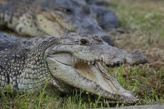

Cocodrilo de Pantano Crocodylus moreletiiEl cocodrilo de pantano, cuyo nombre científico es Crocodylus moreletii, es un reptil que habita en zonas húmedas del sureste de México, incluyendo la península de Yucatán, así como en partes de Belice y Guatemala. Este animal pertenece a la familia Crocodylidae y es una especie muy importante para los ecosistemas acuáticos. El cocodrilo de pantano vive principalmente en ríos, lagunas, pantanos, cenotes y humedales donde el agua es tranquila. Es un depredador que ayuda a mantener el equilibrio del ecosistema al controlar poblaciones de peces, aves y otros animales.
1. Clasificación científica
En conclusión, el cocodrilo de pantano es una especie muy importante para los ecosistemas de la península de Yucatán y otras regiones de Centroamérica. Aunque puede parecer peligroso, normalmente evita el contacto con los seres humanos.
Este animal cumple un papel fundamental dentro de la cadena alimenticia y ayuda a mantener el equilibrio natural en ríos, lagunas y pantanos. Sin embargo, el cocodrilo de pantano ha enfrentado amenazas como la caza ilegal y la pérdida de su hábitat natural. Por esta razón, actualmente es una especie protegida en México. Cuidar y conservar al cocodrilo de pantano es importante para proteger la biodiversidad y la salud de los ecosistemas acuáticos de la región.